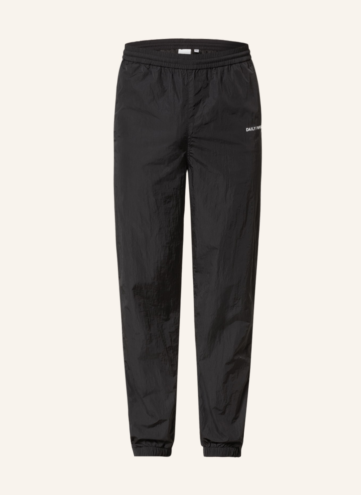
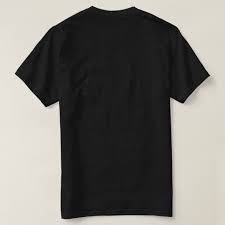
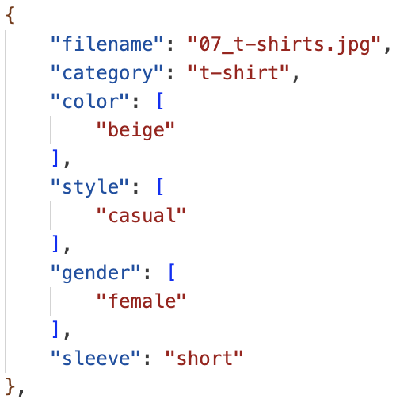

Our Vision
Introduction

CASUAL.AI is an intelligent, context-aware outfit recommendation system — your virtual stylist on demand. It was designed to tackle a surprisingly common daily problem:
“What should I wear today?” and more importantly, “What actually goes well together for what I’m doing?”
Why We Built CASUAL.AI
For most people, picking the right outfit can be surprisingly stressful. It often takes 15–20 minutes, includes trying on multiple combinations, and ends in last-minute decisions that may not be ideal for the weather, occasion, or setting.
We built CASUAL.AI to eliminate this daily friction and bring a sense of confidence and convenience to dressing up. Our system helps users make fast, stylish, and weather-appropriate clothing decisions using the items they already own — no shopping required.
Example Use Case
Imagine you have an important job interview at 10 AM, and it’s currently 32°C (90°F) outside.
You open CASUAL.AI, type in:
> “I have an interview today, what should I wear?”
The system instantly: - Checks the weather in your city
- Detects that it’s a formal occasion
- Filters your wardrobe to remove shorts or casual tees
- Applies color matching rules
- Presents you with 3 curated outfit options
- And finally, asks Anthropic’s Claude LLM to evaluate and suggest the best outfit, along with a natural explanation like:
> “Go with the navy pants and white long-sleeve — sharp and breathable. Perfect for the weather and gives off a confident, professional vibe.”
What CASUAL.AI Does
- Understands your wardrobe
- Knows the context
- Generates smart suggestions
- Saves you time
Our Goal
The ultimate goal of CASUAL.AI is to simplify and elevate the way users dress.
Whether you’re heading to: - A formal event
- A casual hangout
- A gym session
- Or even a last-minute dinner
CASUAL.AI helps you look good, feel prepared, and save time — without overthinking it.
It’s more than a recommendation system — it’s a smart, fashion-aware companion that grows with your style.
Data Preprocessing
File Renaming for Consistency
To ensure data integrity and compatibility across our pipeline, we renamed all clothing image files following a standardized format. This helped maintain consistent references during feature extraction, metadata annotation, and model training.
Dataset Source: Kaggle Fashion Dataset
We used a public Kaggle clothing dataset as the primary source for training. The dataset contained images of various clothing items, which we categorized into four main classes:
- Pants
- Shorts
- Shirts
- T-shirts
Below are sample inputs from the dataset:
 
The images varied in resolution, lighting, and orientation — making this dataset an excellent benchmark for building a real-world ready recommendation system.
Manual Metadata Annotation
To enhance context-aware outfit generation, we created a custom metadata file (metadata.json) that includes attributes such as:
- Color (e.g., black, beige, denim)
- Category (pants, shirt, etc.)
- Gender (male, female, unisex)
- Sleeve length (short, long)
This metadata allowed our system to filter wardrobe items based on occasion, weather, and user preferences.

Image Segmentation
To remove background noise and focus purely on the clothing item, we applied image segmentation using Hugging Face’s Segment Anything Model (SAM).
Segmenting out the background helped us: - Improve classification accuracy by removing irrelevant visual cues
- Generate cleaner feature embeddings
- Build a visually consistent wardrobe UI for users
This step was crucial in making sure that the model learned to identify clothes by their actual cut, shape, and style — not the background or setting in which they were photographed.